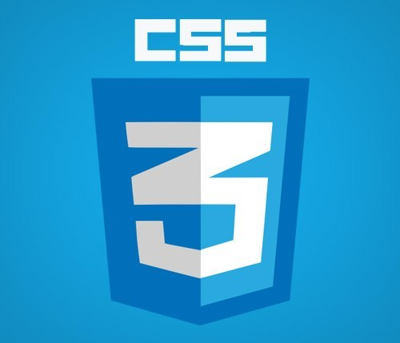

Cascading Style Sheet(CSS) 의 약자로 HTML 등의 마크업 언어로 작성된 문서가 실제로 웹 사이트에 표현되는 방법 을 정해주는 언어로 W3C에서 "디자인적 요소를 HTML과 완전히 분리시켜 구조화된 HTML을 만들기 위해 CSS를 만들었다."
구조화된 HTML은 HTML 태그를 본연의 용도에 맞게 사용하는 것으로, 예를 들어 최상위 제목을 뜻하는 h1 태그는 문서의 제목 수준으로 쓰이며, 본문 문단은 p 태그로 나눈다. 이렇게 하면 디자인적 요소가 대부분 배제되기 때문에 HTML을 알아보기가 훨씬 쉽다.